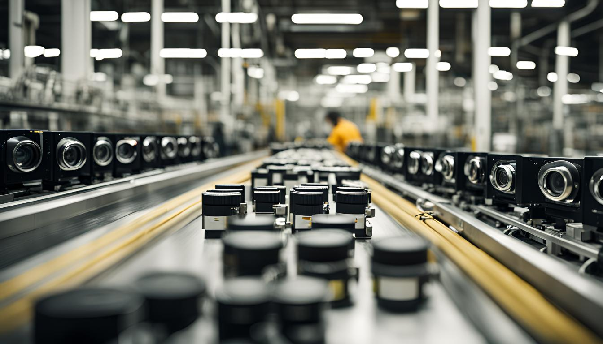

10/02/2025
AI-Powered Image Processing Solutions in Sustainable Manufacturing
In a world where technology is rapidly advancing and there is an increasing responsibility for environmental sustainability, artificial intelligence holds the potential to revolutionize, particularly in the field of sustainable manufacturing. In this article, we will explore the critical role AI plays in sustainable manufacturing processes and how AI-powered image processing techniques can transform these processes. Throughout the article, we will provide detailed insights into how AI improves existing processing methods, offering various examples from applications and results to deeply examine this exciting area of technology.
What Role Does Artificial Intelligence Play in Sustainable Manufacturing?
Sustainable manufacturing aims to enhance production efficiency while minimizing environmental impact. In this context, artificial intelligence (AI) and image processing technologies optimize energy consumption in factories, leading to energy savings and more eco-friendly operations.
AI plays a critical role in continuously monitoring production lines for anomalies and defects. These systems can autonomously adjust processes to increase efficiency and reduce waste. As a result, less material is wasted, and resource usage is minimized in alignment with sustainable production principles.
Through image processing, product quality can be instantly evaluated, enabling faster and more effective quality control. This reduces material waste and minimizes production errors significantly.
AI-powered systems contribute to energy efficiency in sustainable manufacturing, reducing the environmental footprint and lowering operational costs. Consequently, production processes are continuously improved with innovative and eco-friendly technologies.
AI-Powered Image Processing Techniques and Applications
AI-powered image processing technologies have the potential to revolutionize sustainable manufacturing. These techniques can detect material defects on production lines, improve product quality, and optimize energy use. Additionally, AI can analyze processed images to predict disruptions in production, allowing timely interventions to enhance efficiency.
AI-based image processing is particularly effective in areas such as color and texture analysis. For instance, in fabric or paint production, it can consistently monitor color accuracy to prevent defective products from reaching the market. Moreover, it is widely used for quality control in complex part geometries, offering faster and more accurate inspections compared to human supervisors.
These technologies also accelerate the transition to more environmentally friendly operations by minimizing material waste and providing critical insights for energy-efficient processes. This results in both cost savings and a reduced ecological footprint.
Ultimately, AI-powered image processing techniques play a vital role in making sustainable manufacturing smarter, faster, and greener. Their integration not only boosts quality and efficiency but also helps shape the future of production.
AI Solutions Enhancing Efficiency in Sustainable Manufacturing
Artificial intelligence significantly boosts efficiency in production processes. Companies adopting sustainable manufacturing practices can use AI to optimize production lines, lowering costs and reducing environmental impacts. This is especially valuable in energy-intensive industries, where AI algorithms manage energy use to deliver energy savings.
By enabling more efficient use of raw materials, AI helps reduce waste in manufacturing. Eliminating unnecessary waste during production not only provides cost benefits but also promotes eco-conscious practices, which are essential for meeting sustainability goals.
Additionally, AI systems that continuously monitor production processes can instantly detect and correct errors. This not only prevents downtime but also ensures product quality remains consistently high. Such systems help save both time and money while improving product competitiveness in the market.
Investments in AI solutions should be central to sustainable manufacturing strategies. These investments are designed to support both environmental and economic sustainability. With advancements in AI, achieving sustainable production goals is becoming more feasible and impactful.
Evaluating AI-Powered Image Processing Outcomes and Paths for Improvement
AI and image processing technologies have a significant impact on sustainable manufacturing, particularly in areas such as quality control and waste management. To fully benefit from these technologies, it's essential to accurately assess outcomes and implement continuous improvement strategies.
AI-enhanced image processing systems can detect defects, improve product quality, and minimize waste on production lines. However, the effectiveness of these systems depends on thorough data analysis. The evaluation process must involve constant updates and optimization of learning algorithms.
First, performance metrics such as error rates, detection accuracy, and processing speed should be established to evaluate image processing results. The analysis of these outcomes should also include improvements in processing capacity, cost reduction, and energy efficiency.
To further enhance results, algorithm and model configurations should be regularly revised. AI models must be retrained and tested with new data. Moreover, real-time adaptation to environmental changes can be achieved through the integration of eco-friendly technologies.
The sustainability of AI-powered image processing systems depends on their compatibility with specific manufacturing processes and industry standards. Ensuring alignment with sectoral regulations and safety standards is essential, and such systems must be continuously monitored for compliance.
Frequently Asked Questions
What is sustainable manufacturing and why is it important?
Sustainable manufacturing refers to production processes that use resources efficiently, reduce environmental harm, and promote social responsibility. It aims to preserve ecological balance and ensure a healthier world for future generations, making it highly important.
What are the benefits of using AI in sustainable manufacturing?
Using AI in sustainable manufacturing allows for faster and more accurate operations. It optimizes resource consumption and reduces environmental impact, ultimately increasing overall efficiency.
How is image processing integrated with AI?
Image processing is integrated with AI algorithms to enable machines to analyze visual data and extract meaningful insights. This integration is especially useful in automated quality control and error detection processes.
What is the potential of AI-powered image processing to reduce production errors?
AI-powered image processing systems can significantly reduce production errors by identifying defects in real time and enabling immediate corrective actions, thereby enhancing product quality and minimizing waste.
How does this technology contribute to environmental sustainability?
AI-driven image processing helps reduce energy use, minimize raw material waste, and control emissions, playing a crucial role in environmental sustainability—particularly in energy-intensive industries.
How should the cost-effectiveness of AI-based image processing solutions be evaluated?
Though initial investments may be high, the long-term benefits—such as faster operations, fewer errors, and optimized resource use—make these solutions cost-effective. They offer significant savings, especially in large-scale manufacturing.
What does the future hold for AI-powered image processing technologies?
AI-powered image processing will continue to evolve, becoming smarter and more versatile. These systems will analyze increasingly complex visual data and expand into more applications, becoming a core part of Industry 4.0.